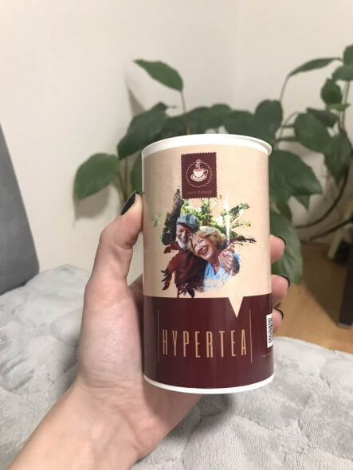
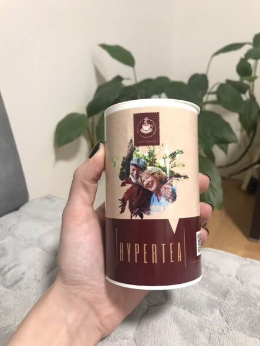
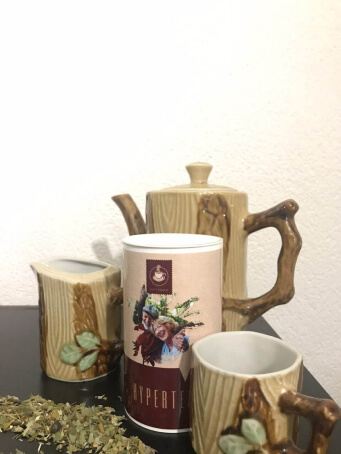

POSLEDNJI PODACI
Danica Gruičić: „Metode liječenja hipertenzije u Hrvatskoj izazivaju samo šok i razočaranje“
Nova ministrica zdravlja, profesorica, doktor znanosti i bivša ravnateljica Instituta za onkologiju i radiologiju Hrvatske Danica Gruičić dala je veliki intervju o liječenju hipertenzije u zemlji. Prema njezinim riječima, zbog nepravilnog liječenja povišenog krvnog tlaka, 2021.-2022. preminuo je svaki 4. umirovljenik. Srećom, Danica Gruičić ima plan kako produljiti život ljudima za 12-15 godina.
“Samo je jedan uzrok svih kardiovaskularnih bolesti, ali ga hrvatski liječnici potpuno ignoriraju”
Novinar: Dobar dan! Hvala što ste pristali na razgovor! Nedavno ste rekli da vas je šokiralo ono što ste vidjeli u Hrvatskoj nakon što ste imenovani na novu dužnost ministra. Možete li komentirati ovo?
Danica Gruičić: Dobar dan! Činjenica je da sam naišla na najnovije statistike o uzrocima smrti starijih ljudi u posljednje 2 godine. Zamislite, hipertenzija je bila na prvom mjestu! To znači da nekoliko tisuća starijih osoba nije dobilo učinkovito liječenje ili uopće nisi znali da ono postoji. To nije smrtonosna bolest koja se ne može izliječiti. Ovo je bolest koja se liječi za 1-2 mjeseca zauvijek! Samo trebate izvršiti čišćenje krvnih sudova. U potpunosti sam sigurna da svatko može kod kuće provesti terapijsko čišćenje krvnih žila i izliječiti ne samo hipertenziju, već i 6 popratnih bolesti.
Novinar: Od vas smo više puta čuli da je čišćenje krvnih žila ključ dugovječnosti i zdravlja srca. Ali zašto?
Danica Gruičić: Sve je vrlo jednostavno. Tijekom cijelog života kolesterol se taloži na stjenkama naših krvnih žila. Zašto se ovo događa? Na to utječu mnogi čimbenici, kao što su pušenje, nezdrava prehrana, loša ekologija. Kako starimo, sve se manje krećemo i u našim krvnim žilama se počinju taložiti štetne naslage. To se događa u 100 od 100 slučajeva.
Budući da je u krvi, kolesterol se taloži na zidovima krvnih žila. U početku je to tanak sloj (nakon 20-25 godina), zatim se sloj kolesterola ubrzano povećava (25-40 godina), jer se sve više čestica lijepi za ljepljivu površinu. Kao rezultat toga, u dobi od 45 godina, kolesterol gotovo dva puta smanjuje lumen krvnih žila i ometa pumpanje krvi. A srce nema drugog izbora nego da povisi krvni tlak. Kod ljudi se pojavljuju skokovi tlaka i hipertenzija povezana s godinama, sa svim negativnim posljedicama. Ali, ni ovo nije najopasnije!
Krv koja se prenosi kroz zaprljane krvne žile i inficira organe. Ona sadrži kolesterol, lipide i razne nečistoće. Znate li što se događa ako takva krv stalno ulazi u organe? Stanice ne samo da stare. Počinje inhibiranje funkcija ovih organa. Ovo tvrdim kao liječnik onkolog. I nije to samo teorija. Čišćenje krvnih žila doista može produljiti život. Ovu sam metodu stalno preporučivala svojim pacijentima, a danas sam odlučna da uvjerim svakog umirovljenika i hipertoničara u učinkovitost čišćenja krvnih žila, kako bi dob od 95. godina života u našoj zemlji postala norma.
Začepljene krvne žile izgledaju poput zahrđalih cijevi u kojima se godinama nakupljao talog. Hrđa u cijevima sprječava nesmetan protok vode. Tako je i u našem tijelu: začepljene žile ne dopuštaju da krv slobodno kola našim tijelom. Zbog toga krvni tlak raste i bolest napreduje.
Danica Gruičić: Upravo me ta situacija šokirala. Vrlo je isplativo prodavati tablete za smanjenje tlaka, a ne liječiti uzrok bolesti. Doktori i farmaceuti više neće kvariti život i zdravlje ljudima! Bolje je izliječiti bolest jednom zauvijek, pustiti srce da radi ispravno i zaboraviti na problem visokog tlaka!
„Krvne žile morate čistiti jednom u 5 godina. Ako to niste činili, onda vaše krvne žile sigurno nisu čiste.”
Novinar: Postoje li neki simptomi po kojima možete shvatiti da je potrebno hitno čišćenje žila?
Danica Gruičić: Nedvojbeno. Možete napraviti samodijagnozu u kućnim uvjetima. Ako pronađete 1-2 simptoma, znajte da vam je hitno potrebno čišćenje. Već nakon prvog postupka primijetit ćete poboljšanja svoga stanja.
- Vrtoglavica i glavobolje;
- Osjećaj pulsiranja u različitim dijelovima tijela, kao što su stražnji dio glave i sljepoočnice;
- Osjećaj "magle u glavi";
- Smanjena oštrina vida;
- Buka u ušima i čujnost otkucaja srca;
- Nesanica i umor;
- Gubitak apetita i mučnina;
- Pritiskajući bolovi u prsima;
- Kratkoća daha u mirovanju i tijekom laganog fizičkog napora;
- Pojačano znojenje.
Danica Gruičić: Ne tako davno bila sam na konferenciji u Stockholmu. Vodeći kardiolozi iz cijele Europe raspravljali su o inovativnim načinima liječenja hipertenzije i produljenja životnog vijeka umirovljenika. Pokazalo se da je Švedska jedna od najnaprednijih zemalja po tom pitanju. Jeste li znali da manje od 5% umirovljenika u Švedskoj ima hipertenziju? To je zato što koriste učinkovitu tehniku čišćenja krvnih žila.
“U Švedskoj se hipertenzija liječi za 2 mjeseca i smatra se manje opasnom od prehlade”
Novinar: Recite nam pobliže kako u Švedskoj stoje stvari s liječenjem hipertenzije?
Danica Gruičić: Doktori i znanstvenici iz Švedske odavno su shvatili da je potrebno davati tablete za smanjenje krvnog tlaka samo u krajnjem slučaju. Da, one daju kratkoročni učinak, ali za liječenje bolesti su praktički besmisleni. Stoga se cjelokupno liječenje hipertenzije temelji na najvažnijoj tvari – AKTIVNIM MOLEKULAMA KISIKA.
Aktivne molekule kisika otkrivene su krajem prošlog stoljeća. To je produkt metabolizma (izmjena tvari) u ljudskom tijelu, no s godinama se broj molekula jako smanjuje. To dovodi do oksidativnog oštećenja i starenja organizma. Znanstvenici su odavno otkrili da se zbog nedostatka molekula smanjuje životni vijek, dolazi do kognitivnih poremećaja i žarišnih lezija u stanicama. Zašto se ovo događa? Glavna funkcija aktivnih molekula kisika je filtriranje krvi i zaštita krvnih žila od mikrooštećenja. Upravo zbog takvih oštećenja kolesterol se lako lijepi za krvne žile i stvara kolesterolske plakove. Obnavljanjem koncentracije molekula može se riješiti kolesterola i produžiti život umirovljenika za 12-15 godina. Oni su u stanju "pojesti" prljavštinu nakupljenu u krvnim žilama, krvne ugruške i kristale kalcija.
Čišćenjem krvnih žila aktivnim molekulama kisika može izliječiti 7 kroničnih bolesti: hipertenziju, vaskularnu demenciju, zatajenje bubrega, aterosklerozu, smanjiti rizik od srčanog udara, moždanog udara i koronarne bolesti srca.
Bila sam jako iznenađena jer u Hrvatskoj nitko nije čuo za aktivne molekule kisika za liječenje hipertenzije. To je glavni uzrok smrti umirovljenika iako se u razvijenijim zemljama Europe bolest odavno liječi jeftinim lijekovima i smatra se sporednom patologijom.
“Sada svatko može očistiti krvne žile uz pomoć aktivnih molekula kisika”
Novinar: Što trebaju učiniti ljudi koji ne mogu otići u Švedsku po lijekove?
Danica Gruičić: Ne treba ništa učiniti. Svatko može očistiti krvne žile kod kuće. Donijela sam nekoliko partija nevjerojatnog preparata koji sadrži aktivne molekule kisika. To je čaj Hypertea. Samo popijete čaj, a vaše tijelo pokreće procese koji vam produljuju život za mnogo godina.
Glavna prednost čaja Hypertea je sastav. To nisu samo aktivne molekule. Proizvod sadrži ekstrakt ploda gloga, ekstrakt biljke crvene djeteline, ekstrakt biljke matičnjaka, ploda aronije i brojne mikro i makro elemente. Oni povećavaju opskrbu krvlju u koronarnim žilama srca i u žilama mozga, povećavaju osjetljivost miokarda na srčane glikozide, blago pojačavaju kontrakciju srčanog mišića i normaliziraju krvni tlak. Visoko koncentrirani ekstrakt dobiven je iz nefermentiranih plodova bez upotrebe termčke obrade ili umjetnih katalizatora, čime je sačuvan izvorni biokemijski sastav.
- Uz pomoć „aktivnih molekula kisika“ čaj Hypertea otapa naslage kolesterola, krvne ugruške i naslage kalcija. Osim toga, zahvaljujući ekstraktu gloga, preparat blagotvorno djeluje na srčani mišić, povećava tonus krvnih žila i vraća im elastičnost.
- Nakon mjesec dana korištenja preparata, prema istraživanjima, žile postaju čiste i elastične kao kod mladih ljudi od 25-30 godina.
- Proizvod obnavlja unutarnje organe i krvne žile, poboljšava vid, koncentraciju i opće stanje.
- Uzimati oralno 3 puta dnevno po 1 šalicu čaja, neovisno o obroku. Prije upotrebe poželjno je popiti čašu čiste negazirane vode.
- Trajanje tečaja prijema ovisi o stanju kardiovaskularnog sustava.
- Minimalni tečaj za profilaktičku primjenu i rijetke promjene krvnog tlaka je 40 dana.
- Učinkovit tečaj prijema za kvalitetnu regulaciju krvnog tlaka je 2 mjeseca.
Uključite se u program "Čiste krvne žile - zdrava nacija"
Novinar: Koliko znamo čaj Hypertea se ne prodaje u apotekama u Hrvatskoj.
Danica Gruičić: Da, to je istina. Htjeli smo masovno prodavati čaj Hypertea u svim ljekarnama u zemlji, ali nismo uspjeli. Svaka od ljekarni također zarađuje na lijekovima, pa su pristali prodavati proizvod samo s povećanjem od 5 puta. To je jednostavno nezamislivo. Nažalost, farmakologija je biznis. Nijedna mirovina neće omogućiti da ovaj lijek dobijete po velikoj cijeni, a ja želim da čaj Hypertea bude u svakom domu u kojem živi osoba starija od 50 godina.
Stoga smo odlučili pokrenuti zdravstveni program “Čiste krvni žile – zdrava nacija” . Ministarstvo zdravstva kontrolira prodaju čaja Hypertea, pa
zato nema marže!
Za kupnju Čaja Hypertea potrebno je ispuniti niz uvjeta:
- Morate se nalaziti na teritoriju Hrvatske. Ne šaljemo čaj Hypertea izvan zemlje.
- Čaj Hypertea možete naručiti ISKLJUČIVO ZA OSOBNU UPOTREBU. Ne prodajemo ljekarnama i trgovačkim organizacijama. Ne možete profitirati na problemima umirovljenika.
- Službeni obrazac za kupnju lijeka možete ispuniti upravo sada. Trebate navesti telefonski broj za kontaktiranje liječnika konzultanta koji će vam pomoći da razvijete personaliziranu strategiju liječenja hipertenzije.
Za sudjelovanje u našem programu potrebno je ostaviti svoje podatke na obrascu ispod i dobiti proizvod sa popustom (ako je još dostupan).
Novinar: Hvala vam na ovako korisnom razgovoru.
Danica Gruičić: Jesam li vas uvjerila da će čaj Hypertea učiniti vaš život dužim, zdravijim i bogatijim? Tada je vrijeme da preuzmete odgovornost za sebe i svoje zdravlje. Ne znam koliko će naš program trajati. Ali želim vas upozoriti da nije ostalo mnogo pakovanja. Svakim danom sve je više narudžbi. Usmena metoda funkcionira, ljudi jedni drugima prenose informacije, savjetuju prijatelje, naručuju čaj za voljene. Nismo očekivali da će se informacija o čaju Hypertea tako brzo proširiti Hrvatskom. No, vrlo je ohrabrujuće da će toliko ljudi uspjeti pobijediti hipertenziju.
Zbog velikog broja narudžbi i smanjenja količine proizvoda potrebno je ograničiti trajanje programa! Zdravstveni program “Čisti krvne žile – zdrava nacija” se bliži kraju uključivo! Požurite kupiti čaj Hypertea (ono što je ostalo na zalihi) uz 50% popusta putem službene narudžbenice koju je postavila Danica Gruičić.
Pažnja! Hypertea brzo nestaje.
Broj pakovanja leka brzo se smanjuje!
5 pakovanja
*(ako ne stignete da popunite formu do isteka navedenog vremena, vaša rezervacija će biti preneta na drugog pacijenta, pošto lijeka nema dovoljno).
-
 Valery6Odličan čaj, djeluje kod hipertenzije! Moj suprug već godinama pije tablete koje normaliziraju tlak, ali to je kemija s hrpom nuspojava. Ovaj čaj je pravo čudo, odmah je normalizirao tlak! Definitivno ću kupiti više i ponavljati tečajeve. Preporučam!
Valery6Odličan čaj, djeluje kod hipertenzije! Moj suprug već godinama pije tablete koje normaliziraju tlak, ali to je kemija s hrpom nuspojava. Ovaj čaj je pravo čudo, odmah je normalizirao tlak! Definitivno ću kupiti više i ponavljati tečajeve. Preporučam! -
Vito6usProizvod je došao brzo, tlak se održava bez kolebanja, hvala liječniku. Usput, čaj je ukusan.
-
Katarina ReykoooHvala vam što ste umirovljenicima pružili tako divnu priliku! Hypertea sam naručila čim je Danica Gruičić stigla s konferencije. Prije sam imala visok tlak, a sada mi tlak uopće ne raste. Prije sam stalno imala glavobolje, sada više nema tih problema. Glavobolja je nestala. Gorčina u mojim ustima je nestala. I mnogo toga se promijenilo na bolje. Čini mi se da sam se pomladila!
LilaI ja sam imala problema sa srcem i disanjem, da sam prije znala da je to sve zbog hipertenzije.
-
Slavica123904858Dugo sam tražila. Vrlo sam zadovoljna. Uzimati ću u tečajevima. Sastav je odličan, uvijek ga provjeravam jer sam radila kao farmaceut. Ovdje uopće nema pritužbi na sastav, za hipertoničare to je pravi božji dar! Savjetujem!
-
NenadPravovremena Dostava, odlično zapakirano, sve je došlo savršeno, nakon uzimanja preparata svakako ću napisati komentar.
-
Mirya LopusEto što su liječnici u Švedskoj. Pravi profesionalci, još i nama pomažu! Samo da tako nastave!!!
-
 LidijaŽelim potvrditi - lijek je pravo čudo!!! Kupila sam Hypertea, kako je bilo napisano, prema programu od liječnika. Imala sam pritisak, skoro svaku večer glava me boljela toliko da sam poludjela, čak ni tablete protiv bolova nisu pomagale. Mada sam kasnije saznala da me glava boli radi visokog tlaka. Općenito, ovaj čaj mi je preporučio školski prijatelj, pa sam ga uspjela kupiti sa popustom. Bila sam jako zadovoljna. Nakon 2 mjeseca već sam bila druga osoba. Shvatila sam da, prije nego što su očistile krvne žile, gotovo nisam živjela! Više me ne boli glava, moji bolovi u prsima su nestali i NAJVAŽNIJE - SMRŠAVILA SAM 20 KG! Od 94 kg do 74 kg. Eto što znači normalizacija krvotoka
LjubomirVau, žurim da što prije naručim, jer izgleda da imam sve simptome koje imaš i ti. Umoran sam od traženja spasa po bolnicama. Inspirirali ste me.
LidijaŽelim potvrditi - lijek je pravo čudo!!! Kupila sam Hypertea, kako je bilo napisano, prema programu od liječnika. Imala sam pritisak, skoro svaku večer glava me boljela toliko da sam poludjela, čak ni tablete protiv bolova nisu pomagale. Mada sam kasnije saznala da me glava boli radi visokog tlaka. Općenito, ovaj čaj mi je preporučio školski prijatelj, pa sam ga uspjela kupiti sa popustom. Bila sam jako zadovoljna. Nakon 2 mjeseca već sam bila druga osoba. Shvatila sam da, prije nego što su očistile krvne žile, gotovo nisam živjela! Više me ne boli glava, moji bolovi u prsima su nestali i NAJVAŽNIJE - SMRŠAVILA SAM 20 KG! Od 94 kg do 74 kg. Eto što znači normalizacija krvotoka
LjubomirVau, žurim da što prije naručim, jer izgleda da imam sve simptome koje imaš i ti. Umoran sam od traženja spasa po bolnicama. Inspirirali ste me. -
Stefan BlagojevićMoj susjed iz vikendice često se žalio na svoje zdravlje zbog raznih bolesti, bilo želučanih ili srčanih. Ali u posljednjih mjesec dana vidim da je aktivan i veseo, oživio. Rekao je da je pio čaj Hypertea. Ima 72 godine.